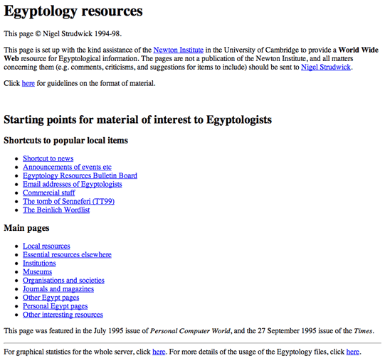
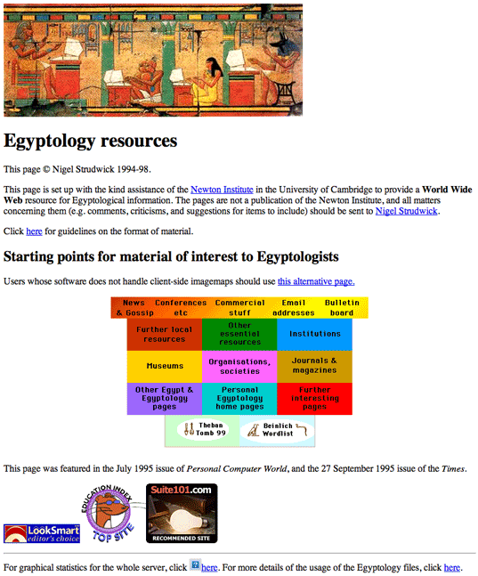
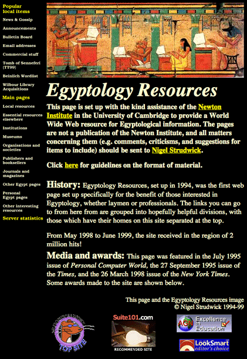
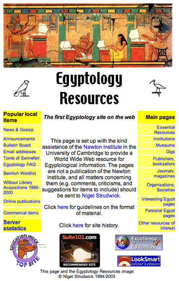
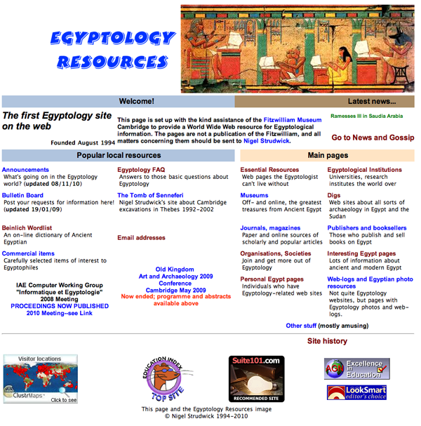
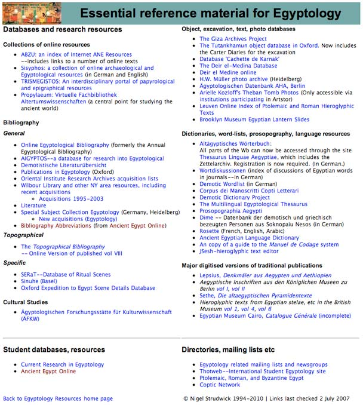

The history of Egyptology Resources
Updated 28 December 2016
Egyptology Resources, set up in 1994, was the first web page set up specifically for the benefit of those interested in Egyptology, whether laymen or professionals.
Helen Strudwick was Computer Officer at the Newton Institute in 1994, and it kindly offered a home to the site, for which I am most grateful. After fourteen years,the management of the Institute decided that it was not really appropriate that an Egyptology site be hosted there, and a new home had to be sought. The Fitzwilliam Museum kindly offered to host the project in December 2008. I am very grateful to the Newton Institute for keeping the site as long as it did, and now to the Fitzwilliam for being its new home.
From May 1998 to June 1999, the site received in the region of 2 million hits!
Media and awards
This page was featured in the July 1995 issue of Personal Computer World, the 27 September 1995 issue of the Times, and the 26 March 1998 issue of the New York Times. Some awards made to the site are shown in a tab below.
Versions
The pictures below show the main 'historic' phases. The present, rather different, appearance was adopted at the end of 2010. The site had not changed for a long time, and with web design moving on, the old page seemed a bit tired. It was time to move to layouts fully controlled by CSS, and to take advantage of the newer features of Dreamweaver. At this time I realised how much awful c. 1994 HTML was still in some files! The ER logo, highly recognisable, has been kept but scaled down in its use, and instead pages each had a menu system, with Egyptian photographs at the top. We'll have to see how the change is received.
- 1994
- 1995
- 1996
- 1999
- 2003
- Awards
The site began in 1994 purely as text, although the Egyptology Resources picture appeared fairly soon after. 
It then went through an intermediate version with a rather over-coloured image-map for linking to the pages (about 1995). 
A change was then made to the black background, first with frames and then without (about 1996). It stayed that way until October 1999. 
In 1999, a design using fewer graphics was adopted.

This version was put into use in June 2003. By this time I felt that wider tables would be acceptable to almost all users, and so an 800 wide grid was used. The chance was taken to reduce further the number of graphics and concentrate on coloured cells for headings. More functions are carried out via Cascading Style Sheets since most users are also now likely to have HTML 4 and above browsers. The second image below shows one of the dependent pages.


In the site's early days, when places around the web contained few Egyptology sites, this site was given a few online "awards" for its content. These are all now very outdated and the links don't work, but here is an image of what they were!